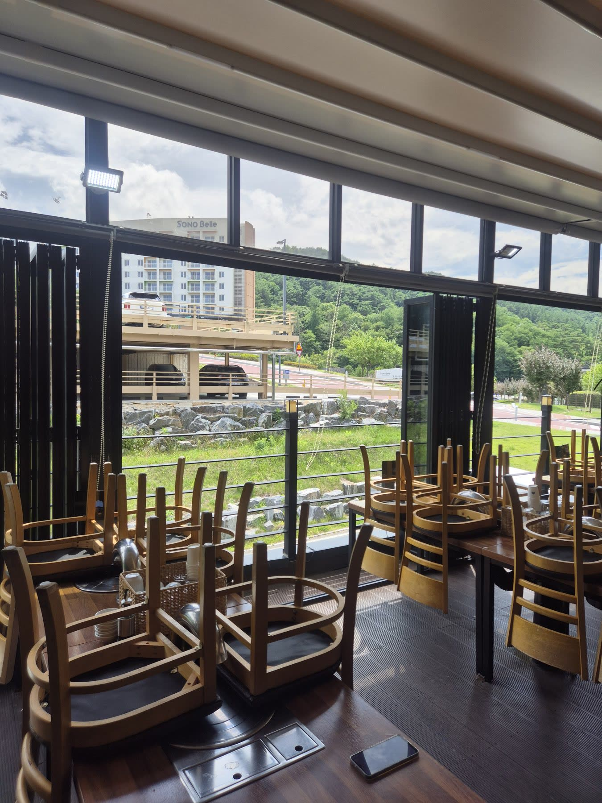
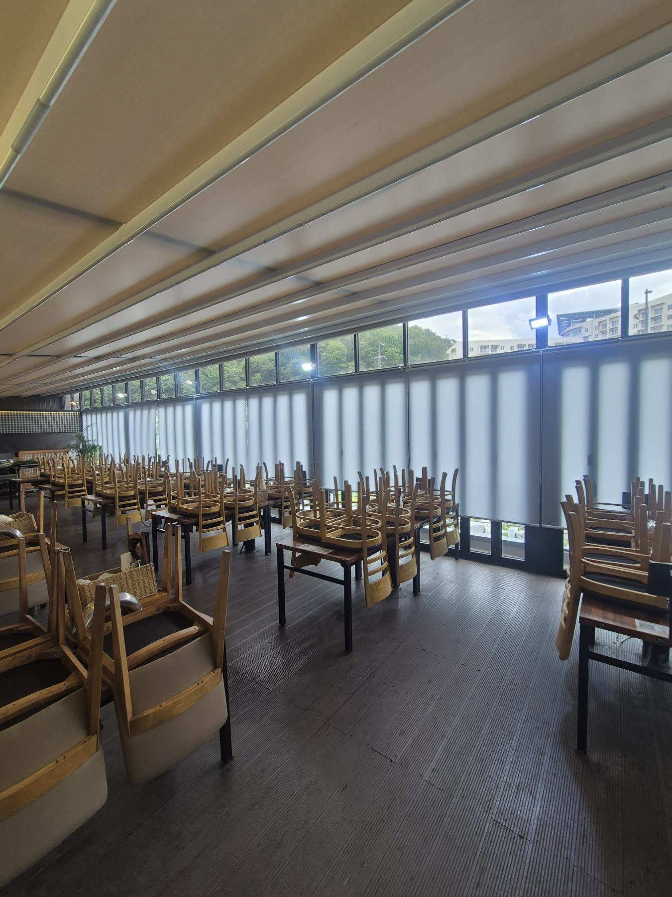
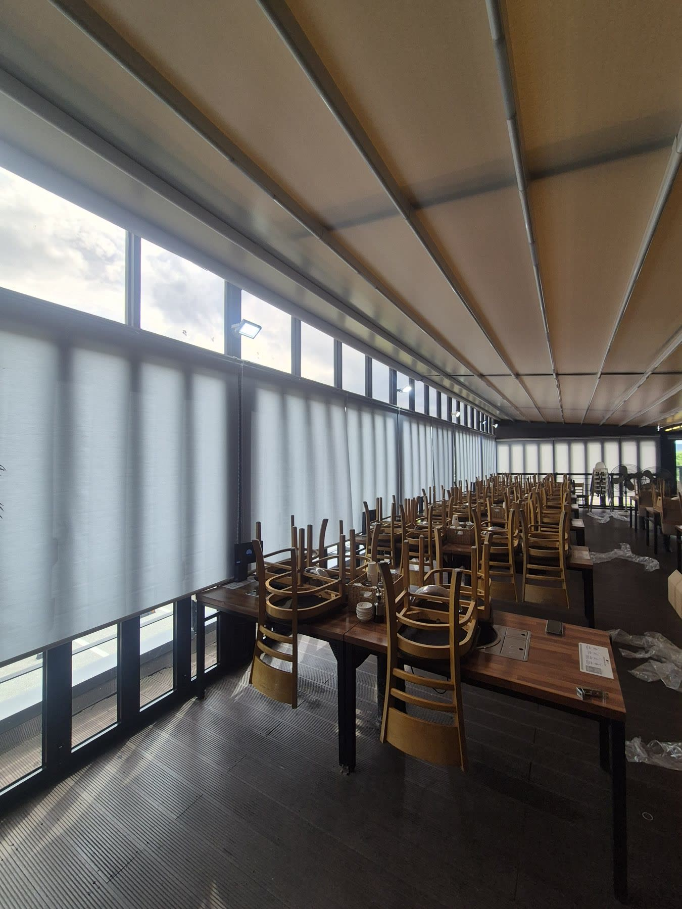
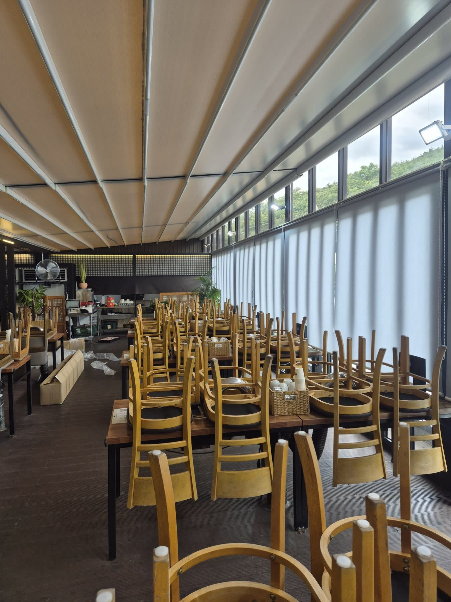

2026년 7월 8일 시공
청송 주왕산가든 대형 홀
채광조절 롤스크린 전체 교체 시공후기

청송 주왕산가든에 다녀왔습니다.
주왕산과 소노벨 청송을 앞에 둔 산 뷰 통유리 대형 홀입니다.
설치한 지 2년이 넘은 기존 롤스크린이 오염되고 색이 바랜 데다 작동까지 말썽이라 연락을 주신 곳이었습니다.
전망 좋은 통유리 홀은 손님을 부르는 가장 큰 무기지만, 그 큰 창으로 드는 햇빛이 너무 강하면 정작 손님은 눈이 부셔 자리를 불편해합니다.

전망은 살리고 눈부심만 잡아야 했습니다
창밖 산 풍경이 곧 매장의 분위기인 곳이라, 요구사항은 분명했습니다.
윗창의 주왕산 전망은 그대로 살릴 것.
손님 눈높이로 들이치는 강한 햇빛과 눈부심은 확실히 차단할 것.
그러면서도 채광은 은은하게 유지해 홀이 어두워지지 않을 것.
여기에 원단마다 제각각 바랜 색을 균일한 톤으로 통일해 홀을 산뜻하게 살리는 것까지였습니다.
채광조절형 롤스크린이 답이었던 이유
일반 롤스크린이 빛을 막느냐 여느냐 둘 중 하나라면, 채광조절형은 빛을 은은하게 걸러 들이면서 눈부심만 덜어냅니다.
창을 완전히 가리지 않아도 직사광의 따가움이 부드러워져서, 홀을 밝게 유지하면서도 손님이 눈부시지 않습니다.
전망을 답답하게 가리지 않으면서 빛만 순화시키니, 산 뷰 통유리처럼 전망이 중요한 공간에 특히 잘 맞습니다.

윗창 전망은 열고, 아랫부분만 차단했습니다
핵심은 창을 통째로 가리지 않는 것이었습니다.
손님 눈높이로 강하게 들어오는 아랫부분은 스크린을 내려 눈부심을 차단하고, 윗창은 전망이 열리도록 조절해 주왕산 풍경을 그대로 살렸습니다.
앉은 자리에서는 눈부심 없이 편안하고, 시선을 들면 산 뷰가 그대로 들어옵니다.
전망을 포기하지 않고 눈부심만 잡는 것, 이게 이 홀에 채광조절형을 권한 이유입니다.

철거부터 균일한 톤 재설치까지
가서 보니 오래된 롤스크린은 원단 오염과 색바램뿐 아니라 작동부까지 헐거워져 있었습니다.
햇빛이 강하게 드는 통유리 창은 원단이 그만큼 빨리 바래는데, 색바램과 작동 불량이 같이 오면 교체 시기가 됐다는 신호입니다.
이런 경우 부분 손질보다 전체 교체가 깔끔하고 오래갑니다.
기존 제품을 라인별로 철거하고, 색바램 없는 균일한 톤의 신제품으로 홀 전면을 통일했습니다.
창마다 색이 달라 어수선했던 분위기가 한 톤으로 정돈되니 홀이 확실히 산뜻해졌습니다.

영업에 지장 없이, 영업 외 시간 순차 시공
음식점은 영업 시간에 작업하면 손님과 매출에 지장이 갑니다.
그래서 영업 외 시간에 홀 전면 라인을 구역별로 나눠 순차적으로 철거·설치했습니다.
한 번에 홀을 통째로 비우지 않고 진행해, 다음 영업에 차질 없이 마무리했습니다.
상업 공간 시공은 제품만큼 일정 배려가 중요합니다.
전망 좋은 통창 홀인데 햇빛 눈부심 때문에 고민이시라면, 전망을 살리면서 눈부심만 잡는 채광조절형 롤스크린이 좋은 답이 됩니다.
오래돼 색바램이나 작동 불량이 생긴 기존 제품도, 전체 교체로 홀 분위기를 한 번에 정돈할 수 있습니다.
매장은 영업에 지장이 없도록 영업 외 시간에 맞춰 시공해 드립니다.
청송을 포함한 대구·경북 전 지역 상가·매장·주택 모두 찾아갑니다.